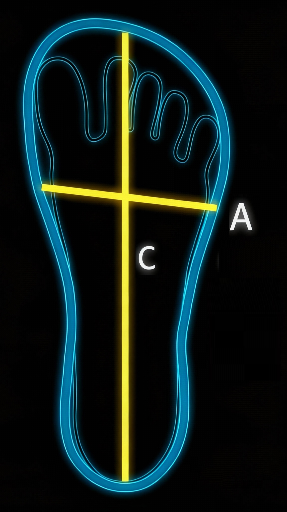

🚚Способы доставки
Мы осуществляем доставку по всей России курьерскими службами Яндекс.Доставка, СДЭК и Почта России за счет покупателя. Стоимость доставки зависит от региона.
Самовывоз - бесплатно.
⏰Сроки обработки
Заказы передаются в мастерскую 2 раза в неделю. Срок пошива - 4 недели с момента заказа.
🌍Международная доставка
Доставка за границу: стоимость и сроки рассчитываются индивидуально в зависимости от страны назначения.
✅Возврат заказанного товара
Обмен и возврат только по браку в течение 14 дней с момента получения. Товар должен иметь товарный вид и упаковку.
Ремонт бракованного товара осуществляется в течение 3 месяцев за счет производителя.
Процедура возврата: отправьте фото дефекта и опишите проблему (брак).
📏Как правильно измерить стопу?
- Всегда измеряйте обе стопы — они могут отличаться на 5-10 мм
- Держите ручку строго вертикально при разметке
- Для окончательного размера используйте большее из двух измерений
- Запишите результат в миллиметрах для точности
- Для точного измерения: воспользуйтесь стопомером и сантиметровой лентой/линейкой
📊Размерные сетки
Мы используем российские размеры RUS. Для каждой модели представлена подробная таблица с указанием длины и ширины стельки в миллиметрах.
Туфельные модели, открытая обувь
| Размер | Длина C (мм) | Ширина А (мм) |
|---|---|---|
| 35 | 232 | 90 |
| 36 | 238 | 92 |
| 37 | 245 | 93 |
| 38 | 252 | 94 |
| 39 | 258 | 96 |
| 40 | 265 | 97 |
| 41 | 272 | 99 |
| 42 | 278 | 100 |
| 43 | 285 | 100 |

Схема измерения:
- Линия A — ширина в области пальцев
- Линия С — длина стельки от пятки до носка
Кеды и зимняя обувь
| Размер | Длина С (мм) | Ширина А (мм) |
|---|---|---|
| 34 | 224 | 92 |
| 35 | 230 | 93 |
| 36 | 237 | 95 |
| 37 | 244 | 96 |
| 38 | 250 | 98 |
| 39 | 257 | 99 |
| 40 | 244 | 101 |
| 41 | 270 | 102 |
| 42 | 277 | 104 |
| 43 | 284 | 105 |
| 44 | 290 | 107 |
| 45 | 297 | 108 |
| 46 | 304 | 110 |
| 47 | 310 | 111 |
Схема измерения:
- Линия A — ширина в области пальцев
- Линия С — длина стельки от пятки до носка
- Учитывайте индивидуальные особенности стопы: выпирающие косточки, узкая стопа, широкая стопа, курносый большой палец, высокий подъем стопы, низкий подъем стопы
❓Размер между двумя вариантами
Если ваша стопа находится между размерами, рекомендуем выбрать больший размер. Примечание: у нас вы можете заказать половинчатый размер ( например, 38,5)
- Обхват и ширина стопы в самом широком месте
- Обхват подъёма стопы
🧽Ежедневный уход
Очищайте обувь от грязи сразу после использования сухой или слегка влажной тканью. Для сильных загрязнений используйте мягкое мыло и теплую воду.
- Очищайте обувь вручную средствами для очистки кожи и замши
- Нельзя использовать машинную стирку и агрессивные моющие средства
- При сильном загрязнении обратитесь в химчистку
- Дополнительные рекомендации - используйте водоотталкивающие спреи
🌡️Правильная сушка
Сушите естественным способом при комнатной температуре, избегая батарей и фена. Используйте деревянные колодки или набивайте бумагой для сохранения формы.
- Всегда сушите при комнатной температуре в проветриваемом месте
- Избегайте прямых солнечных лучей, батарей и других источников тепла
- Набейте обувь бумагой для сохранения формы
🧽Защита:
- Используйте защитные спреи для кожи и ткани
- Обрабатывайте обувь водоотталкивающими средствами по необходимости
- Для кожаных моделей применяйте крем для предотвращения трещин
- Для ежедневной ходьбы: 1-3 года
- Для бега по дорогам: 640-800 км
- Для трейлраннинга: 480-640 км
- Для повседневного ношения: 8-12 месяцев при активном использовании
Помните: своевременная замена обуви — это инвестиция в здоровье ваших стоп и суставов.
👟Что такое босоногая обувь?
Босоногая обувь — это минималистичная обувь, которая повторяет форму стопы, имеет гибкую подошву с нулевым перепадом и возвращает ощущение контакта с землёй. Она способствует укреплению мышц стопы и естественной походке.
✨Преимущества босоногой обуви
1. Ультратонкая и гибкая подошва
Наша подошва достаточно толстая, чтобы защитить ваши ноги от острых предметов, но при этом тонкая и гибкая, чтобы вы чувствовали землю. Это обеспечивает более естественную походку и задействует мышцы стоп.
2. Конструкция без перепада высот
Благодаря отсутствию разницы в высоте между пяткой и передней частью стопы ваше тело сохраняет естественное положение, что снижает нагрузку на суставы и способствует поддержанию здоровой осанки.
3. Широкая коробка
Мы оставляем пространство для естественного движения пальцев ног. Это улучшает равновесие, устойчивость и предотвращает распространённые проблемы со стопами, вызванные тесной обувью.
- Легкая конструкция — комфорт при длительном ношении
- Дышащие материалы — комфорт в любое время года
- Универсальность — подходит для любой местности
⚕️Противопоказания
- Сахарном диабете
- Заболеваниях стоп
- Неврологических расстройствах (ДЦП, последствия инсульта)
- Пяточной шпоре
- Выраженном плоскостопии
- Избыточном весе
- Острых травмах стоп
При сомнениях консультируйтесь с врачом.